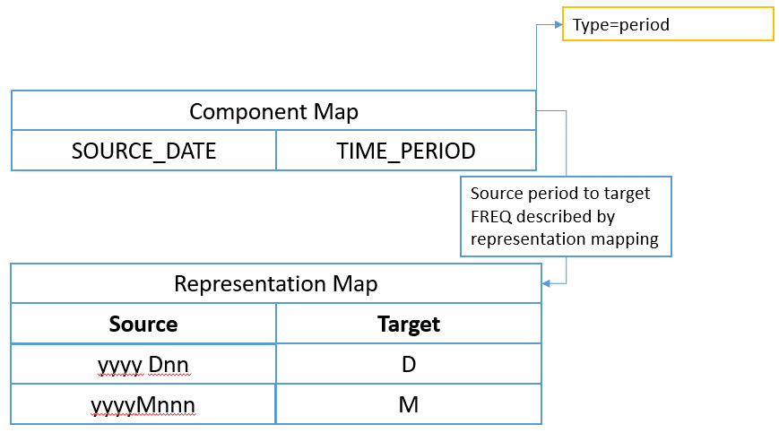
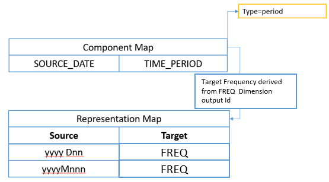
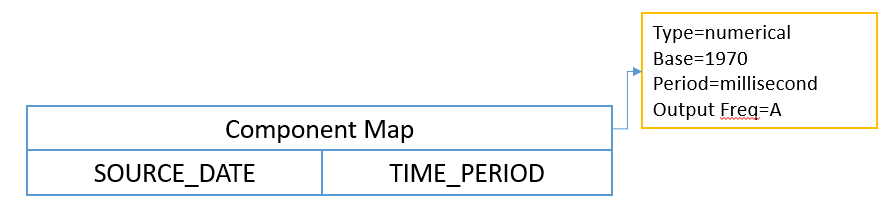

Structure Mapping¶
Introduction¶
The purpose of SDMX structure mapping is to transform datasets from one dimensionality to another. In practice, this means that the input and output datasets conform to different Data Structure Definition.
Structure mapping does not alter the observation values and is not intended to perform any aggregations or calculations.
An input series maps to:
- Exactly one output series; or
- Multiple output series with different Series Keys, but the same observation values; or
- Zero output series where no source rule matches the input Component values.
Typical use cases include:
- Transforming received data into a common internal structure;
- Transforming reported data into the data collector’s preferred structure;
- Transforming unidimensional datasets1 to multi-dimensional; and
- Transforming internal datasets with a complex structure to a simpler structure with fewer dimensions suitable for dissemination.
1-1 structure maps¶
1-1 (pronounced ‘one to one’) mappings support the simple use case where the value of a Component in the source structure is translated to a different value in the target, usually where different classification schemes are used for the same Concept.
In the example below, ISO 2-character country codes are mapped to their ISO 3-character equivalent.
| Country | Alpha-2 code | Alpha-3 code |
|---|---|---|
| Afghanistan | AF | AFG |
| Albania | AL | ALB |
| Algeria | DZ | DZA |
| American Samoa | AS | ASM |
| Andorra | AD | AND |
| etc… |
Different source values can also map to the same target value, for example when deriving regions from country codes.
Source Component: REF_AREA |
Target Component: REGION |
|---|---|
| FR | EUR |
| DE | EUR |
| IT | EUR |
| ES | EUR |
| BE | EUR |
N-n structure maps¶
N-n (pronounced ‘N to N’) mappings describe rules where a specified combination of values in multiple source Components map to specified values in one or more target Components. For example, when mapping a partial Series Key from a highly multidimensional cube (like Balance of Payments) to a single ‘Indicator’ Dimension in a target Data Structure.
Example:
| Rule | Source | Target |
|---|---|---|
| 1 | If FREQUENCY=A and ADJUSTMENT=N and MATURITY=L |
Set INDICATOR=A_N_L |
| 2 | If FREQUENCY=M and ADJUSTMENT=S_A1 and MATURITY=TY12 |
Set INDICATOR=MON_SAX_12 |
N-n rules can also set values for multiple source Components.
| Rule | Source | Target |
|---|---|---|
| 1 | If FREQUENCY=A and ADJUSTMENT=N and MATURITY=L |
Set INDICATOR=A_N_L, STATUS=QXR15, NOTE="Unadjusted" |
| 2 | If FREQUENCY=M and ADJUSTMENT=S_A1 and MATURITY=TY12 |
Set INDICATOR=MON_SAX_12, STATUS=MPM12, NOTE="Seasonally Adjusted" |
Ambiguous mapping rules¶
A structure map is ambiguous if the rules result in a dataset containing multiple series with the same Series Key.
A simple example mapping a source dataset with a single dimension to one with multiple dimensions is shown below:
| Source | Target | Output Series Key |
|---|---|---|
SERIES_CODE=XMAN_Z_21 |
INDICATOR=XM, FREQ=A, ADJUSTMENT=N, UNIT_MEASURE=_Z, COMP_ORG=21 |
XM:A:N |
SERIES_CODE=XMAN_Z_34 |
INDICATOR=XM, FREQ=A, ADJUSTMENT=N, UNIT_MEASURE=_Z, COMP_ORG=34 |
XM:A:N |
The above behaviour can be okay if the series XMAN_Z_21 contains
observations for different periods of time then the series XMAN_Z_34.
If however both series contain observations for the same point in time,
the output for this mapping will be two observations with the same
series key, for the same period in time.
Representation maps¶
Representation Maps replace the SDMX 2.1 Codelist Maps and are used describe explicit mappings between source and target Component values.
The source and target of a Representation Map can reference any of the following:
- Codelist
- Free Text (restricted by type, e.g String, Integer, Boolean)
- Valuelist
A Representation Map mapping ISO 2-character to ISO 3-character Codelists would take the following form:
| CL_ISO_ALPHA2 | CL_ISO_ALPHA3 |
|---|---|
| AF | AFG |
| AL | ALB |
| DZ | DZA |
| AS | ASM |
| AD | AND |
| etc… |
A Representation Map mapping free text country names to an ISO 2-character Codelist could be similarly described:
| Text | CL_ISO_ALPHA2 |
|---|---|
| “Germany” | DE |
| “France” | FR |
| “United Kingdom” | GB |
| “Great Britain” | GB |
| “Ireland” | IE |
| “Eire” | IE |
| etc… |
Valuelists, introduced in SDMX 3.0, are equivalent to Codelists but allow the maintenance of non-SDMX identifiers. Importantly, their IDs do not need to conform to IDType, but as a consequence are not Identifiable.
When used in Representation Maps, Valuelists allow Non-SDMX identifiers containing characters like £, $, % to be mapped to Code IDs, or Codes mapped to non-SDMX identifiers.
In common with Codelists, each item in a Valuelist has a multilingual name giving it a human-readable label and an optional description. For example:
| Value | Locale | Name |
|---|---|---|
| $ | en | United States Dollar |
| % | En | Percentage |
| fr | Pourcentage |
Other characteristics of Representation Maps:
-
Support the mapping of multiple source Component values to multiple Target Component values as described in the section on n-to-n mappings; this covers also the case of mapping an Attribute with an array representation to map combinations of values to a single target value;
-
Allow source or target mappings for an Item to be optional allowing rules such as ‘A maps to nothing’ or ‘nothing maps to A’; and
-
Support for mapping rules where regular expressions or substrings are used to match source Component values. Refer to the Section Regular expression and substring rule.
Regular expression and substring rules¶
It is common for classifications to contain meanings within the
identifier, for example the code Id 'XULADS' may refer to a particular
seasonality because it starts with the letters XU.
With SDMX 2.1 each code that starts with XU had to be individually
mapped to the same seasonality, and additional mappings added when new
Codes were added to the Codelists. This led to many hundreds or
thousands of mappings which can be more efficiently summarised in a
single conceptual rule:
If starts with 'XU' map to 'Y'
These rules are described using either regular expressions, or substrings for simpler use cases.
Regular expressions¶
Regular expression mapping rules are defined in the Representation Map.
Below is an example set of regular expression rules for a particular component.
| Regex | Description | Output |
|---|---|---|
A |
Rule match if input = 'A' |
OUT_A |
^[A-G] |
Rule match if the input starts with letters A to G | OUT_B |
A \| B |
Rule match if input is either ‘A’ or ‘B’ | OUT_C |
Like all mapping rules, the output is either a Code, a Value or free text depending on the representation of the Component in the target Data Structure Definition.
If the regular expression contains capture groups, these can be used in
the definition of the output value, by specifying \n as an output
value where n is the number of the capture group starting from 1.
For example
| Regex | Target output | Example Input | Example Output |
|---|---|---|---|
([0-9]{4})[0-9]([0-9]{1}) |
\1-Q\2 |
200933 | 2009-Q3 |
As regular expression rules can be used as a general catch-all if nothing else matches, the ordering of the rules is important. Rules should be tested starting with the highest priority, moving down the list until a match is found.
The following example shows this:
| Priority | Regex | Description | Output |
|---|---|---|---|
| 1 | A |
Rule match if input = 'A' |
OUT_A |
| 2 | B |
Rule match if input = 'B' |
OUT_B |
| 3 | [A-Z] |
Any character A-Z |
OUT_C |
The input 'A' matches both the first and the last rule, but the first
takes precedence having the higher priority. The output is OUT_A.
The input 'G' matches on the last rule which is used as a catch-all or
default in this example.
Substrings¶
Substrings provide an alternative to regular expressions where the required section of an input value can be described using the number of the starting character, and the length of the substring in characters. The first character is at position 1.
For instance:
| Input String | Start | Length | Output |
|---|---|---|---|
ABC_DEF_XYZ |
5 | 3 | DEF |
XULADS |
1 | 2 | XU |
Sub-strings can therefore be used for the conceptual rule If starts with 'XU' map to Y
as shown in the following example:
| Start | Length | Source | Target |
|---|---|---|---|
| 1 | 2 | XU |
Y |
Mapping non-SDMX time formats to SDMX formats¶
Structure mapping allows non-SDMX compliant time values in source datasets to be mapped to an SDMX compliant time format.
Two types of time input are defined:
- Pattern based dates – a string which can be described using a
notation like
dd/mm/yyyyor is represented as the number of periods since a point in time, for example:2010M001(first month in 2010), or2014D123(123rd day in 2014); and - Numerical based datetime – a number specifying the elapsed periods since a fixed point in time, for example Unix Time is measured by the number of milliseconds since 1970.
The output of a time-based mapping is derived from the output Frequency, which is either explicitly stated in the mapping or defined as the value output by a specific Dimension or Attribute in the output mapping. If the output frequency is unknown or if the SDMX format is not desired, then additional rules can be provided to specify the output date format for the given frequency Id. The default rules are:
| Frequency | Format | Example |
|---|---|---|
| A | YYYY |
2010 |
| D | YYYY-MM-DD |
2010-01-01 |
| I | YYYY-MM-DD-Thh:mm:ss |
2010-01T20:22:00 |
| M | YYYY-MM |
2010-01 |
| Q | YYYY-Qn |
2010-Q1 |
| S | YYYY-Sn |
2010-S1 |
| T | YYYY-Tn |
2010-T1 |
| W | YYYY-Wn |
YYYY-W53 |
In the case where the input frequency is lower than the output frequency, the mapping defaults to end of period, but can be explicitly set to start, end or mid-period.
There are two important points to note:
- The output frequency determines the output date format, but the default output can be redefined using a Frequency Format mapping to force explicit rules on how the output time period is formatted.
- To support the use case of changing frequency the structure map can optionally provide a start of year attribute, which defines the year start date in MM-DD format. For example: YearStart=04-01.
Pattern based dates¶
Date and time formats are specified by date and time pattern strings
based on Java’s Simple Date Format. Within date and time pattern
strings, unquoted letters from 'A' to 'Z' and from 'a' to 'z' are
interpreted as pattern letters representing the components of a date or
time string. Text can be quoted using single quotes (') to avoid
interpretation. "''" represents a single quote. All other characters are
not interpreted; they’re simply copied into the output string during
formatting or matched against the input string during parsing.
Due to the fact that dates may differ per locale, an optional property, defining the locale of the pattern, is provided. This would assist processing of source dates, according to the given locale2. An indicative list of examples is presented in the following table:
| English (en) | Australia (AU) | en-AU |
|---|---|---|
| English (en) | Canada (CA) | en-CA |
| English (en) | United Kingdom (GB) | en-GB |
| English (en) | United States (US) | en-US |
| Estonian (et) | Estonia (EE) | et-EE |
| Finnish (fi) | Finland (FI) | fi-FI |
| French (fr) | Belgium (BE) | fr-BE |
| French (fr) | Canada (CA) | fr-CA |
| French (fr) | France (FR) | fr-FR |
| French (fr) | Luxembourg (LU) | fr-LU |
| French (fr) | Switzerland (CH) | fr-CH |
| German (de) | Austria (AT) | de-AT |
| German (de) | Germany (DE) | de-DE |
| German (de) | Luxembourg (LU) | de-LU |
| German (de) | Switzerland (CH) | de-CH |
| Greek (el) | Cyprus (CY) | el-CY |
| Greek (el) | Greece (GR) | el-GR |
| Hebrew (iw) | Israel (IL) | iw-IL |
| Hindi (hi) | India (IN) | hi-IN |
| Hungarian (hu) | Hungary (HU) | hu-HU |
| Icelandic (is) | Iceland (IS) | is-IS |
| Indonesian (in) | Indonesia (ID) | in-ID |
| Irish (ga) | Ireland (IE) | ga-IE |
| Italian (it) | Italy (IT) | it-IT |
Examples
22/06/1981would be described asdd/MM/YYYY, with localeen-GB2008-mars-12would be described asYYYY-MMM-DD, with localefr-FR22 July 1981would be described asdd MMMM YYYY, with localeen-US22 Jul 1981would be described asdd MMM YYYY2010 D62would be described asYYYYDnn(day 62 of the year 2010)
The following pattern letters are defined (all other characters from 'A'
to 'Z' and from 'a' to 'z' are reserved):
| Letter | Date or Time Component | Presentation | Examples |
|---|---|---|---|
G |
Era designator | Text | AD |
yy |
Year short (upper case is Year of Week 1) | Year | 96 |
yyyy |
Year Full (upper case is Year of Week) | Year | 1996 |
MM |
Month number in year starting with 1 | Month | 07 |
MMM |
Month name short | Month | Jul |
MMMM |
Month name full | Month | July |
ww |
Week in year | Number | 27 |
W |
Week in month | Number | 2 |
DD |
Day in year | Number | 189 |
dd |
Day in month | Number | 10 |
F |
Day of week in month | Number | 2 |
E |
Day name in week | Text | Tuesday; Tue |
U |
Day number of week (1 = Monday, …, 7 = Sunday) | Number | 1 |
HH |
Hour in day (0-23) | Number | 0 |
kk |
Hour in day (1-24) | Number | 24 |
KK |
Hour in am/pm (0-11) | Number | 0 |
hh |
Hour in am/pm (1-12) | Number | 12 |
mm |
Minute in hour | Number | 30 |
ss |
Second in minute | Number | 55 |
S |
Millisecond | Number | 978 |
n |
Number of periods, used after a SDMX Frequency Identifier such as M, Q, D (month, quarter, day) | Number | 12 |
The model is illustrated below:

Figure 24. showing the component map mapping the SOURCE_DATE Dimension
to the TIME_PERIOD dimension with the additional information on the
component map to describe the time format

Figure 25. showing an input date format, whose output frequency is
derived from the output value of the FREQ Dimension
Numerical based datetime¶
Where the source datetime input is purely numerical, the mapping rules are defined by the Base as a valid SDMX Time Period, and the Period which must take one of the following enumerated values:
- day
- second
- millisecond
- microsecond
- nanosecond
| Numerical datetime systems | Base | Period |
|---|---|---|
| Epoch Time (UNIX): Milliseconds since 01 Jan 1970 | 1970 | millisecond |
| Windows System Time: Milliseconds since 01 Jan 1601 | 1601 | millisecond |
The example above illustrates numerical based datetime mapping rules for two commonly used time standards.
The model is illustrated below:

Figure 26. showing the component map mapping the SOURCE_DATE Dimension
to the TIME_PERIOD Dimension with the additional information on the
component map to describe the numerical datetime system in use
Mapping more complex time inputs¶
VTL should be used for more complex time inputs that cannot be interpreted using the pattern based on numerical methods.
Using TIME_PERIOD in mapping rules¶
The source TIME_PERIOD Dimension can be used in conjunction with other
input Dimensions to create discrete mapping rules where the output is
conditional on the time period value.
The main use case is setting the value of Observation Attributes in the target dataset.
| Rule | Source | Target |
|---|---|---|
| Rule | Source | Target |
| :— | :— | :— |
| 1 | If INDICATOR=XULADS and TIME_PERIOD=2007 |
Set OBS_CONF=F |
| 2 | If INDICATOR=XULADS and TIME_PERIOD=2008 |
Set OBS_CONF=F |
| 3 | If INDICATOR=XULADS and TIME_PERIOD=2009 |
Set OBS_CONF=F |
| 4 | If INDICATOR=XULADS and TIME_PERIOD=2010 |
Set OBS_CONF=C |
In the example above, OBS_CONF is an Observation Attribute.
Time span mapping rules using validity periods¶
Creating discrete mapping rules for each TIME_PERIOD is impractical
where rules need to cover a specific span of time regardless of
frequency, and for high-frequency data.
Instead, an optional validity period can be set for each mapping.
By specifying validity periods, the example from Section 13.8 can be re-written using two rules as follows:
| Rule | Source | Target |
|---|---|---|
| 1 | If INDICATOR=XULADS, validity period: start=2007, end=2009 |
Set OBS_CONF=F |
| 2 | If INDICATOR=XULADS, validity period: start=2010 |
Set OBS_CONF=F |
In Rule 1, start period resolves to the start of the 2007 period
(2007-01-01T00:00:00), and the end period resolves to the very end of
2009 (2009-12-31T23:59:59). The rule will hold true regardless of the
input data frequency. Any observations reporting data for the Indicator
XULADS that fall into that time range will have an OBS_CONF value of F.
In Rule 2, no end period is specified so remains in effect from the
start of the period (2010-01-01T00:00:00) until the end of time. Any
observations reporting data for the Indicator XULADS that fall into that
time range will have an OBS_CONF value of C.
Mapping examples¶
Many to one mapping (N-1)¶
| Source | Map To |
|---|---|
FREQ="A", ADJUSTMENT="N", REF_AREA="PL", COUNTERPART_AREA="W0", REF_SECTOR="S1", COUNTERPART_SECTOR="S1", ACCOUNTING_ENTRY="B", STO="B5G" |
FREQ="A", REF_AREA="PL", COUNTERPART_AREA="W0", INDICATOR="IND_ABC" |
The Dimensions FREQ, REF_AREA, and COUNTERPART_AREA map from source to target verbatim.
The mapping simply specifies:
FREQ => FREQ
REF_AREA => REF_AREA
COUNTERPART_AREA => COUNTERPART_AREA
No Representation Mapping is required. The source value simply copies across unmodified.
The remaining Dimensions all map to the Indicator Dimension. This is an example of many Dimensions mapping to one Dimension. In this case a Representation Mapping is required, and the mapping first describes the input ‘partial key’ and how this maps to the target indicator:
N:S1:S1:B:B5G => IND_ABC
Where the key sequence is based on the order specified in the mapping
(i.e ADJUSTMENT, REF_SECTOR, etc will result in the first value N being
taken from ADJUSTMENT as this was the first item in the source Dimension
list.
Note
The key order is NOT based on the Dimension order of the DSD, as the mapping needs to be resilient to the DSD changing.
Mapping other data types to Code Id¶
In the case where the incoming data type is not a string and not a code
identifier i.e. the source Dimension is of type Integer and the target
is Codelist. This is supported by the RepresentationMap. The
RepresentationMap source can reference a Codelist, Valuelist, or be free
text, the free text can include regular expressions.
The following representation mapping can be used to explicitly map each age to an output code.
| Source Input (Free Text) | Desired Output (Code Id) |
|---|---|
| 0 | A |
| 1 | A |
| 2 | A |
| 3 | B |
| 4 | B |
If this mapping takes advantage of regular expressions it can be expressed in two rules:
| Regular Expression | Desired Output |
|---|---|
[0-2] |
A |
[3-4] |
B |
Observation Attributes for Time Period¶
This use case is where a specific observation for a specific time period has an attribute value.
| Input INDICATOR | Input TIME_PERIOD | Output OBS_CONF |
|---|---|---|
XULADS |
2008 | C |
XULADS |
2009 | C |
XULADS |
2010 | C |
Or using a validity period on the Representation Mapping:
| Input INDICATOR | Valid From/ Valid To | Output OBS_CONF |
|---|---|---|
XULADS |
2008/2010 | C |
Time mapping¶
This use case is to create a time period from an input that does not respect SDMX Time Formats.
The Component Mapping from SYS_TIME to TIME_PERIOD specifies itself as
a time mapping with the following details:
| Source Value | Source Mapping | Target Frequency | Output |
|---|---|---|---|
| 18/07/1981 | dd/MM/yyyy |
A | 1981 |
When the target frequency is based on another target Dimension value, in
this example the value of the FREQ Dimension in the target DSD.
| Source Value | Source Mapping | Target Frequency Dimension | Output |
|---|---|---|---|
| 18/07/1981 | dd/MM/yyyy |
FREQ |
1981-07-18 (when FREQ=D) |
When the source is a numerical format
| Source Value | Start Period | Interval | Target FREQ |
Output |
|---|---|---|---|---|
| 1589808220 | 1970 | millisecond | M | 2020-05 |
When the source frequency is lower than the target frequency additional information can be provided for resolve to start of period, end of period, or mid period, as shown in the following example:
| Source Value | Source Mapping | Target Frequency Dimension | Output |
|---|---|---|---|
| 1981 | yyyy |
D – End of Period | 1981-12-31 |
When the start of year is April 1st the Structure Map has
YearStart=04-01:
| Source Value | Source Mapping | Target Frequency Dimension | Output |
|---|---|---|---|
| 1981 | yyyy |
D – End of Period | 1982-03-31 |
-
yyyyrepresents the calendar year whileYYYYrepresents the year of the week, which is only relevant for 53 week years ↩↩ -
A list of commonly used locales can be found in the Java supported locales ↩